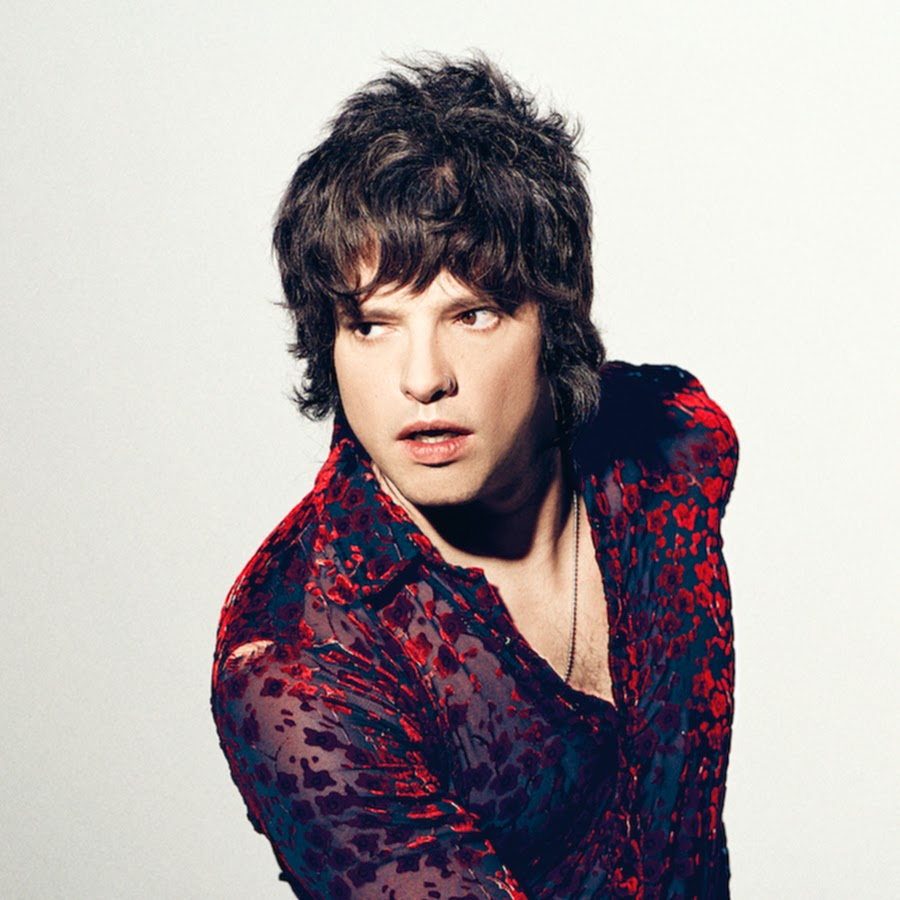

La Historia de Lasso

Andrés Vicente Lazo Uslar, conocido artísticamente como Lasso, es un cantante y compositor venezolano. Nació el 18 de febrero de 1988. Músico y cantautor venezolano ganador del grammy, que ostenta el récord de más sencillos #1 (14) en las carteleras de su país. Ha ganado múltiples discos de platino en Colombia, Chile, Ecuador, Estados Unidos, México, Perú y Venezuela. Ha sido recipiente de premios Grammy, Heat y nominado a Premios lo Nuestro, y Juventud. Además, Lasso es super simpático en persona, la mayor parte del tiempo huele a frutas silvestres del bosque y si le prestas dinero normalmente lo devuelve en 4-6 días hábiles dependiendo del monto. Físicamente, es como un 7/10 pero con buena iluminación puede inclusive subir a un 8. Desde que ganó el grammy, sus amigos cercanos aseguran que el premio se le subió a la cabeza y que inclusive se refiere a sí mismo en tercera persona colocando comillas a su propio nombre. “Lasso” no tuvo absolutamente nada que ver con la redacción de esta biografía.
¿Que genero musical toca?
Hasta el momento se ha enfocado en diversos géneros como lo es el pop, pop rock, balada romántica y urbano, comentando que sin complejo alguno le gustaría experimentar todos los géneros posibles.
